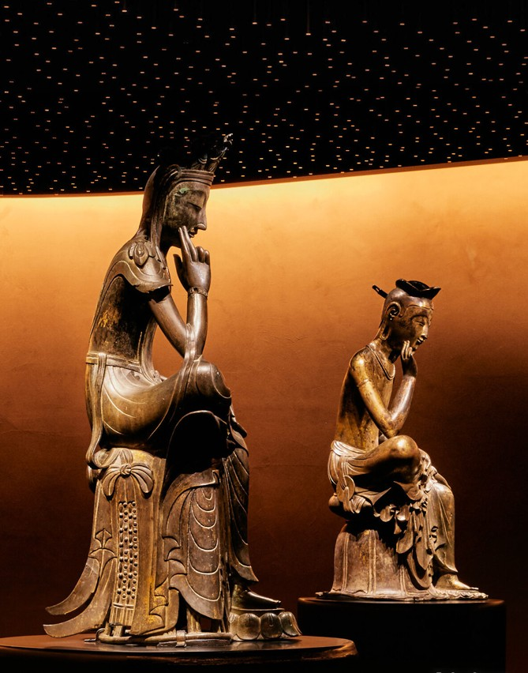
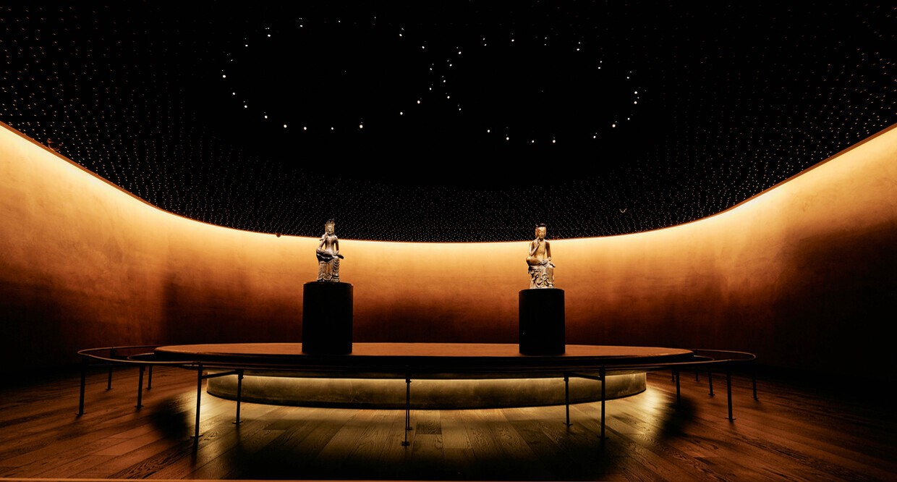

전시실 안내
숨 박물관의 전시장은 총 3개의 관과 연결통로인 '역사의 길'로 구성되어 수많은 유물을 전시하여 제공하고 있습니다. 전시물은 외부전시일정 및 유물의 보존상태를 위하여 주기적으로 교체하고 있습니다.
중·근세관
distance
1F 중·근세관
고려
조선
대한제국
고려(918~1392), 조선(1392~1897), 대한제국(1897~1910)실로 꾸며진 북쪽 전시 공간은 당시의 역사를 엿볼 수 있는 자료를 전시하여, 관람객이 한국 중세, 근세의 역사를 쉽게 이해하고 흥미를 느끼도록 꾸몄습니다.
대표 전시품
-

초조대장경 -
경국대전조선통보 -
동의보감 -
열하일기 -
상평통보 -
칙명지보
사유의 방
distance


사유의 방은 우리나라의 국보 반가사유상 두 점이 나란히 전시된 공간입니다.
대표 전시품
-
반가사유상 -
반가사유상
조각·공예관
distance
3F 조각·공예관
분청사기-백자-청자
금속공예
불교조각
북쪽 전시공간은 3차원의 조형물이 빚어내는 입체미를 감상할 수 있는 공간으로, 불교조각실, 금속공예실, 도자공예실[청자, 분청사기, 백자]로 나누어 700여 점에 이르는 명품을 전시하고 있습니다.
대표 전시품
-
분청사기 상감 어룡무늬 병 -
백자 상감 연꽃 넝쿨무늬 대접 -
분청사기 박지 철채 모란무늬 자라병 -
백자 청화 매화 새 대나무무늬 항아리 -
백자 철화 대나무무늬 편병 -
달항아리
역사의 길
distance통로 | 역사의 길
과거와 미래를 이어주는 가교 역사의 길은 관람객들의 동선을 효율적으로 관리해 주는 공간이며, 현대를 살아가는 한국인들의 삶을 역사와 이어 주는 가교(架橋)와도 같습니다. 관람객들은 역사의길을 통해 동서남북의 방향에 구애되지 않고, 1·2·3층의 제한 없이 각 전시실을 손쉽게 오가며 관람을 즐길 수 있습니다.
대표 전시품
-
경천사십층석탑